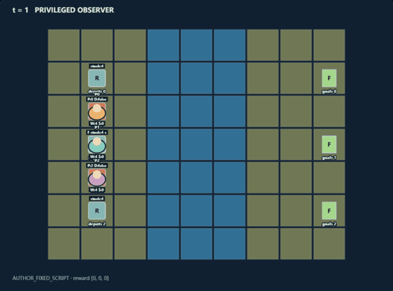
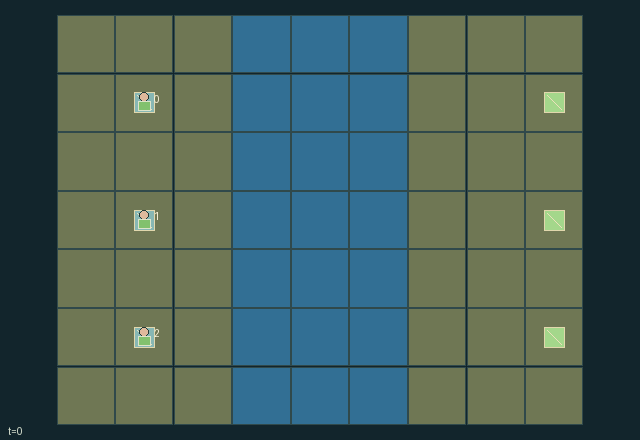

GI093 · Trestle Commons: Roads and Rivalry

Original recording scope: 原回放视角 · Mode: 固定脚本演示
Additional generated state replay (different trajectory / full-state debug)

Move each role's actual cart from the western bank to its matching eastern goal, while deciding whether to pool construction resources, share bridges, maintain access or pursue toll income.
Identity and original contract
3 independently actionable roles; 11 discrete commands per role; 224 native observation columns per role; original horizon 128 steps. Declared per-step reward range: -1 to 2. Observation regime: fully_observable.
Source SHA-256: 27b76e957066e5558ac1617ceaf024d154cc42b45f8a5642f46197e6d74a90d2
The objective, rewards, population, map and horizon remain original. A preview is not a success claim.
Objective and gameplay
Move each role's actual cart from the western bank to its matching eastern goal, while deciding whether to pool construction resources, share bridges, maintain access or pursue toll income.
Any role may use a live bridge. Entering wears it by one, or two when hauling a cart; depleted occupied remnants permit departure but block new entry. Ownership allocates real payoff transfers, while maintenance, public access, shared depots and material handoffs change others' later route opportunities.
- River cells x=3..5 require constructed bridges. Anyone may enter a bridge with positive durability; simultaneous congestion can block a route.
- A new front bridge costs two wood and starts at durability four. Repair costs one wood and adds two durability, up to four.
- Entering consumes one durability, or two with a cart. A depleted occupied remnant supports only departure; once vacated it disappears unless repaired.
- Crossing someone else's owned bridge transfers 1/32 reward to its owner. Owners can waive future tolls or salvage their unoccupied bridge.
- Deliver your own cart for +1; each partner gains +0.25. All three deliveries end play; all roles can keep assisting after their own delivery.
Ending: All three carts delivered ends naturally. A cart delivery rewards its owner +1 and each other role +0.25. A crossing of another role's owned bridge transfers 1/32 reward from traveler to owner. Otherwise truncate at step 128.
What this game explores
Resource commons & externalities: An action changes a persistent resource or burden that another role also encounters. Compare extraction with maintenance and record the downstream resource trajectory.
Commitment, exchange & governance: Promises consume time, liquidity, access or material. Separate an announced agreement from a binding commitment and from its eventual delivery; log cancellation and expiry too.
Joint transport & shared access: Positions, load geometry, occupancy and persistent access constrain whose action can succeed next. Distinguish physical handoff, shared controls and simultaneous force from a cosmetic cooperation label.
These are questions supported by rule structure, not observed learning effects.
Play it: operating walkthrough
crucibles play --game gi093Keep Python running and open its printed address. Select this game, set a seed and press Create session. The game itself is always English.
Assign a role range to Host with Assign / take over, or Assign all roles. Invite a second participant with Create player invitation, then assign a disjoint subset. Every original role is available.
For every owned role choose a legal command and press Queue. Arrow keys / WASD queue a declared directional action for the current role camera when available. Space or Advance one joint step advances everyone together. Non-directional games use the selectors.
Unqueued roles use the labelled untrained uniform-legal policy. Take over or release roles before the next step without resetting. Full-state debug is privileged and permanently logged; role cameras preserve permissions. Close the session to retain logs. Server restart does not restore sessions.
Complete command reference
IDs and English labels exactly match the manifest. Availability depends on role, resources, location and phase. An available action can still have no productive effect.
0·Wait
1·Move north attempt; face north
2·Move east attempt; face east
3·Move south attempt; face south
4·Move west attempt; face west
5·Build front bridge for two wood, or repair it for one
6·Pick up or set down own cart at current position
7·Give one wood to adjacent teammate with capacity
8·Draw one wood from a nearby finite depot
9·Salvage own unoccupied front bridge; recover at most one wood
10·Release front bridge ownership; waive its future toll
Roles and capability identifiers
These original role names describe capabilities, not interchangeable skins. Check each owned role's legal selector before planning handoffs.
agent_0·Northern hauler and builder; own cart goal is (8,1)
agent_1·Central hauler and builder; own cart goal is (8,3)
agent_2·Southern hauler and builder; own cart goal is (8,5)
Information and observation permissions
All terrain, bridge states and ownership, cargo positions, worker resources, depot stock and goal identities are public. Entity visibility is true for all roles. Public observation contains the entire dynamic infrastructure state and net toll ledgers.
The GIF is full-state debug and may reveal hidden entities or private state. Train on obs[agent], not the picture, state tree or another role's private row. Field slices and visibility are in the original manifest.
Reinforcement-learning integration
import jax
from crucibles_jaxmarl import make
env = make("gi093")
key = jax.random.PRNGKey(0)
key, rk, ak, sk = jax.random.split(key, 4)
obs, state = jax.jit(env.reset)(rk)
actions = env.sample_actions(ak, state)
obs, state, rewards, dones, info = jax.jit(env.step_env)(sk, state, actions)
done = dones["__all__"]Observations are float32 vectors of width 224; actions are scalar int32; masks have 11 entries. Supply all 3 roles each transition. Masked sampling is an engineering reference, not a trained learner.
step_env retains terminal data without reset. step performs outer autoreset and keeps terminal data in info["raw_state"] and info["raw_observation"]. Use dones["__all__"] for episode boundaries; separate completion, failure and time limit in analysis.
JIT or vmap equal identities and shapes. Split independent reset, policy and transition keys. Group different shapes explicitly; do not shrink the population or horizon. Host rendering stays outside training.
Training questions and fair evaluation
Define valid completion from the objective before fitting. Preserve original rewards and also report real deliveries/services, losses, resource state, unresolved episodes and per-role returns. Animation is not a reward signal.
An action changes a persistent resource or burden that another role also encounters. Compare extraction with maintenance and record the downstream resource trajectory.
Promises consume time, liquidity, access or material. Separate an announced agreement from a binding commitment and from its eventual delivery; log cancellation and expiry too.
Positions, load geometry, occupancy and persistent access constrain whose action can succeed next. Distinguish physical handoff, shared controls and simultaneous force from a cosmetic cooperation label.
Compare memory, communication or centralized critics under matched actor information. Declare critic access; keep actor inputs role-filtered. Match partner/opponent distributions, masks, compute and checkpoint selection. Final tests never enter fitting or selection.
Independent training runs or source-pairing blocks are inferential units; episodes from one policy are not independent training replications. Save hashes, keys, versions, device, time and cost. Negative, zero, failed and indeterminate outcomes are valid. No trained checkpoint or target score is supplied.
Classification and evidence
Overlapping editorial labels are reading aids, not proof of novelty, difficulty, strategic equivalence or learning effects.
- Resource commons & externalities
- Evidence
manifest.task.objective: Move each role's actual cart from the western bank to its matching eastern goal, while deciding whether to pool construction resources, share bridges, maintain access or pursue toll income.
- Commitment, exchange & governance
- Evidence
manifest.task.objective: Move each role's actual cart from the western bank to its matching eastern goal, while deciding whether to pool construction resources, share bridges, maintain access or pursue toll income.
- Evidence
manifest.task.interaction: Any role may use a live bridge. Entering wears it by one, or two when hauling a cart; depleted occupied remnants permit departure but block new entry. Ownership allocates real payoff transfers, while maintenance, public access, shared depots and material handoffs change others' later route opportunities.
- Evidence
manifest.task.observation_access: All terrain, bridge states and ownership, cargo positions, worker resources, depot stock and goal identities are public. Entity visibility is true for all roles. Public observation contains the entire dynamic infrastructure state and net toll ledgers.
- Joint transport & shared access
- Evidence
manifest.task.objective: Move each role's actual cart from the western bank to its matching eastern goal, while deciding whether to pool construction resources, share bridges, maintain access or pursue toll income.
- Evidence
manifest.task.interaction: Any role may use a live bridge. Entering wears it by one, or two when hauling a cart; depleted occupied remnants permit departure but block new entry. Ownership allocates real payoff transfers, while maintenance, public access, shared depots and material handoffs change others' later route opportunities.
- Evidence
manifest.task.observation_access: All terrain, bridge states and ownership, cargo positions, worker resources, depot stock and goal identities are public. Entity visibility is true for all roles. Public observation contains the entire dynamic infrastructure state and net toll ledgers.
Source, receipts and preview limits
The additional generated state GIF replays saved untrained legal actions through the original kernel. At most 25 actual endpoints include initial and terminal state; no invented interpolation. It is full-state debug, not the role observation. Where an original scene preview exists, it is displayed first with its own recorded information scope. The two recordings may use different trajectories and views.
Original source, observation slices, manifest and mechanism
Native receipt · Presentation receipt
Engineering passes do not establish learning. Nonzero floating differences remain recorded and undetermined; no new tolerance was introduced. Human scores remain unverified.